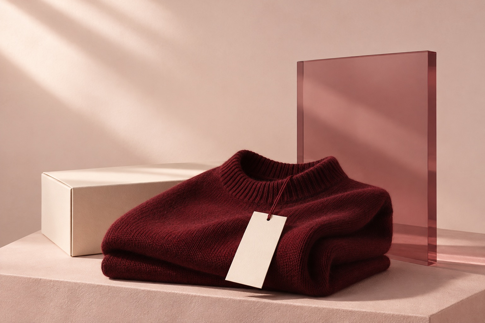

Шоурум От заявки до выдачи
Продажи и коммуникацииПокупатель просит
Покупатель просит
отложить размер.
- Задача
- Вещь продаётся в разных цветах и размерах. Консультанту нужно видеть, какой экземпляр ждёт покупателя и в каком магазине.
- Решение
- В кассе связаны заявка из amoCRM, товар и документы МоегоСклада. В карточке видны состав и оплата. Отдельные сценарии предусмотрены для аренды и сертификатов.
Заявка→Резерв→Оплата→Отгрузка
Менеджер проверяет нужный размер и закрепляет его за покупателем. Когда платёж учтён, склад получает состав заказа и данные для отправки.